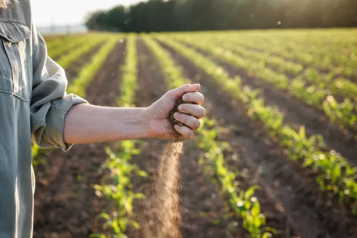

O Blog do Lupio é um espaço dedicado à valorização da cultura do campo, da agricultura familiar e da vida rural brasileira. Aqui você encontra histórias inspiradoras, curiosidades sobre tradições do interior, notícias do agro, conteúdos educativos e muito mais!
Nosso objetivo é aproximar o campo da cidade, compartilhando conhecimento, experiências e o dia a dia de quem faz o Brasil rural acontecer.
Conheça as diferenças, desafios e oportunidades de empreender em realidades distintas, mas complementares.
Descubra como planejar sua ideia desde o início usando ferramentas como o Canvas e monte seu plano de ação.
Aprenda sobre empreendimentos coletivos, sustentáveis e solidários que fortalecem comunidades.
Saiba como divulgar seus produtos, usar redes sociais e aproveitar feiras e parcerias locais para crescer.